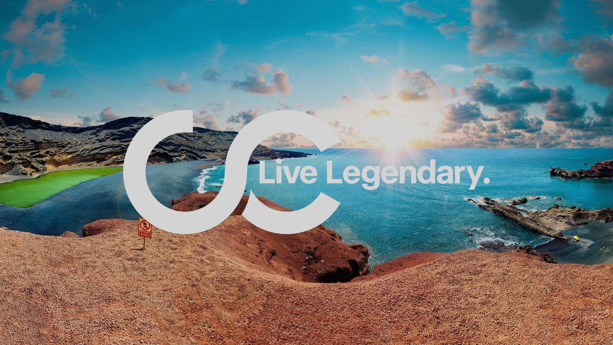
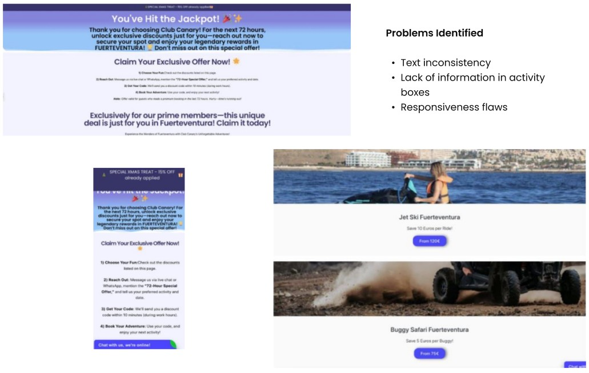
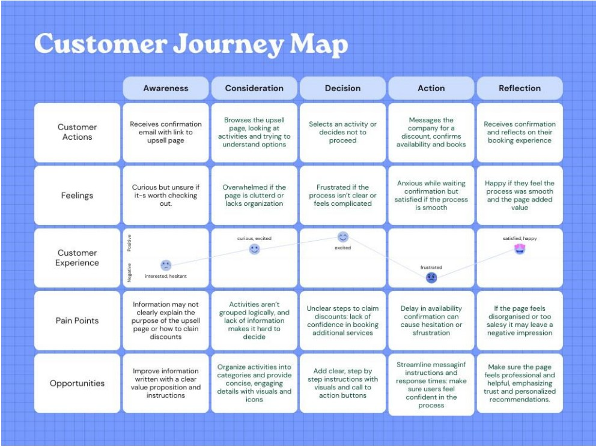
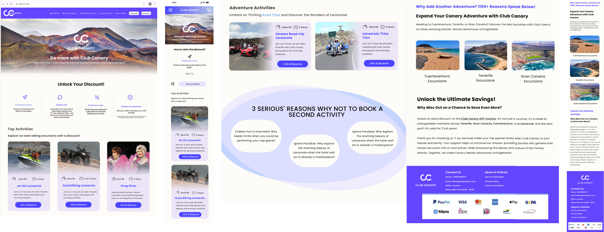
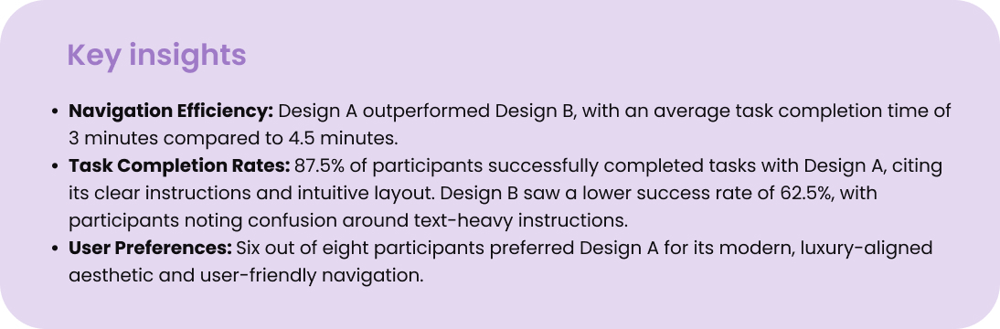

Internship · UX/UI · Web
← Back to workClub Canary Upsell Page Redesign
Redesigning a post-booking upsell page to improve clarity, mobile structure, and booking confidence for travellers choosing extra excursions.

The challenge
Make post-booking recommendations easier to scan and trust.
The upsell page had business value, but the experience was too text-heavy and hard to scan, especially on mobile.
My goal was to redesign the page so customers could understand activity options faster and feel more confident adding another excursion after booking.
Finding the main friction points
The upsell page appears after a customer completes a booking, so users are already in a decision-making moment. The existing page had long text blocks, inconsistent formatting, unclear hierarchy, and activity cards with limited useful information.
I combined stakeholder interviews, a customer survey, observations, competitor analysis, and early layout testing to understand both user needs and business goals.
Main user problem
Users needed to understand activity options quickly after booking.
Main business goal
Improve post-booking excursion sales without making the page feel pushy.

Understanding different traveller needs
Based on survey and stakeholder input, I created personas for different customer types, including family planners, adventure seekers, relaxation lovers, and spontaneous travellers.
Mapping their emotions around the post-booking moment helped me focus on reducing stress, building trust, and supporting fast decisions without pressure.

Exploring clearer activity cards
During ideation, I translated research findings into layout directions. I explored different card structures, image ratios, information order, and call-to-action placement.
The strongest direction used a simple information hierarchy: image, title, short description, key details, price, and action.
Less text
Shorter descriptions made activities easier to scan.
Clearer cards
Structured cards helped users compare options faster.
Mobile-first
The page needed to work well for users browsing after booking.

Designing a cleaner post-booking experience
The final design focused on visual hierarchy, spacing, readable typography, and clearer content. I used the brand accent colour carefully for calls to action and important highlights.
I also considered performance while designing by reducing heavy WordPress elements, simplifying layout structure, and keeping the page technically realistic to implement.

Comparing user-focused and stakeholder-focused directions
I tested the redesign with participants familiar with online booking and compared a user-focused layout against a more text-heavy stakeholder-preferred direction.
Feedback highlighted the importance of clear button labels, logical grouping of information, and visuals that create trust.
- Users preferred cleaner cards with shorter descriptions.
- Clear grouping made activity comparison easier.
- Visuals helped users feel more confident about booking.
- The test results helped communicate design decisions to the stakeholder.

Outcome
A cleaner upsell experience that connects user needs, business goals, and technical feasibility.
This project helped me practise a full UX/UI process in a real company context, from research and stakeholder interviews to design, testing, and implementation thinking.
The biggest learning was how to balance user clarity with stakeholder goals around sales, branding, and technical performance.
Back to all projects →